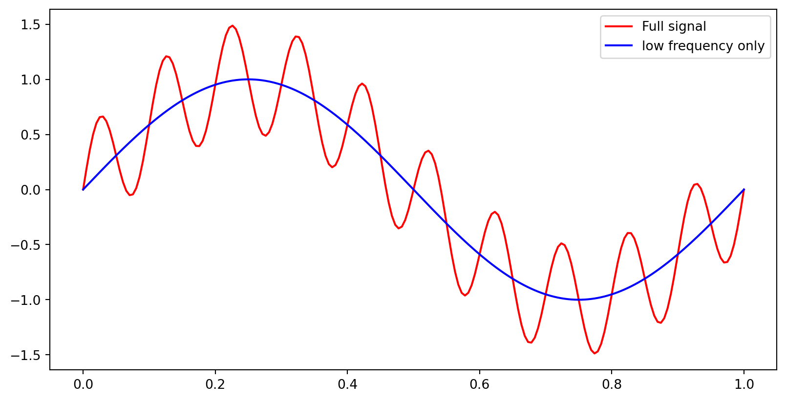
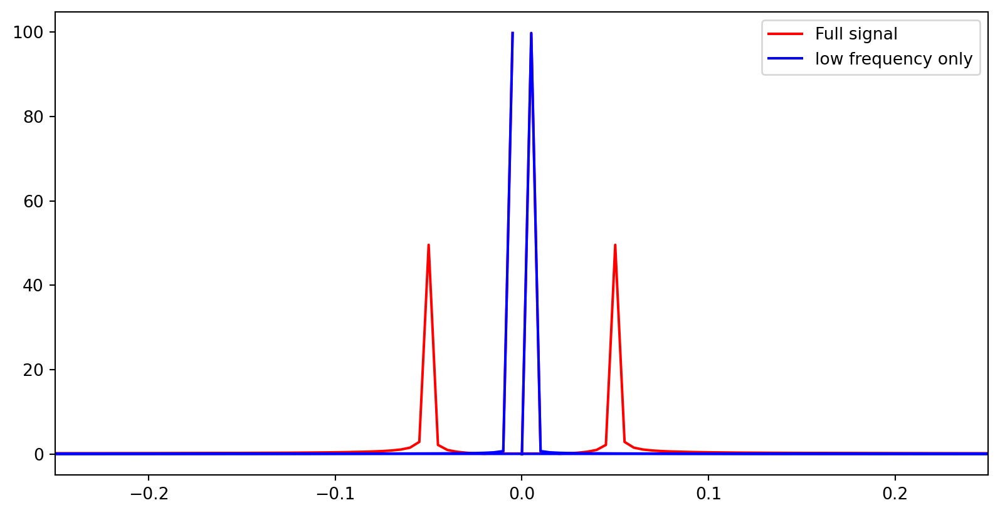
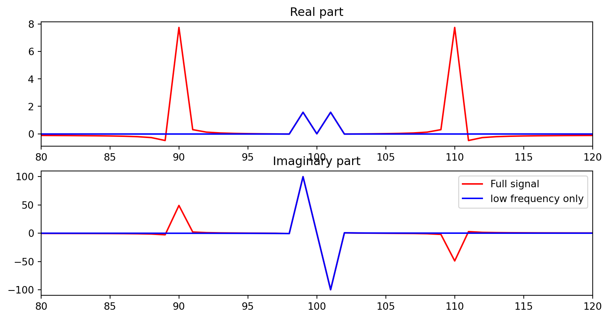
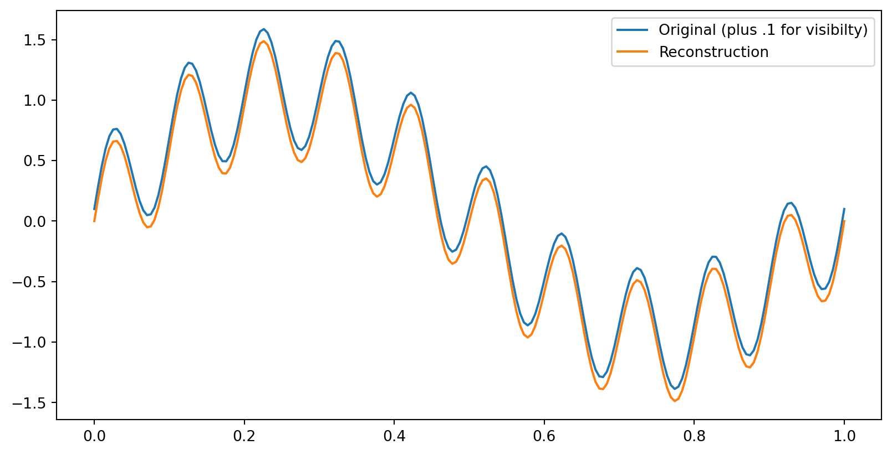
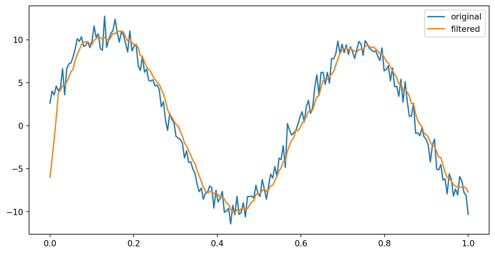

The component of the vector \(b\) along the line spanned by \(a\) is \(b^{\mathrm{T}} a / a^{\mathrm{T}} a\).
A Fourier series is projecting \(f(x)\) onto \(\sin x\). Its component \(p\) in this direction is exactly \(b_{1} \sin x\).
Euler’s formula
The complex exponential \(e^{i x}\) is a combination of \(\cos x\) and \(\sin x\):
\[
e^{i x}=\cos x+i \sin x
\]
So we can rewrite the Fourier series using complex exponentials:
\[
f(x)=c_{0}+c_{1} e^{i x}+c_{2} e^{2 i x}+\cdots = \sum_k c_k\cdot e^{i k x}
\]
pause
The formula for finding the coefficients \(c_{k}\) is the same as before, but now we use the complex exponential functions \(e^{i k x}\) instead of the sines and cosines:
The DFT can be written as a matrix-vector product \(\mathbf{y} = F \mathbf{c}\).
The coefficients \(\mathbf{c}\) can be found by \(\mathbf{c} = F^\prime \mathbf{y}\).
But of course it is also true from 1 that if \(F\) is invertible, that \(\mathbf{c} = F^{-1} \mathbf{y}\). Therefore, \(F^{-1} = F^\prime=\frac{1}{N} F^*\).
This means that \(F\) is unitary. Its rows and columns are orthogonal.
A concrete example
Let’s take an example with \(N=4\) and \(y=(2, 4, 6, 8)\).
Make a table. Note that \(i^2 = i^6 = -1\), \(i^3 = i^7 = -i\), and \(i^4 = 1\).
We call the matrix \(F\) the DFT (Discrete Fourier Transform) matrix. It is a square unitary matrix of size \(N \times N\).
The matrix \(F^\prime\) is the inverse DFT matrix. It is the complex conjugate of \(F\) divided by \(N\).
Summary
The DFT can be written as a matrix-vector product \(\mathbf{y} = F \mathbf{c}\).
The coefficients \(\mathbf{c}\) can be found by \(\mathbf{c} = F^\prime \mathbf{y}\).
F is easy to compute, with a simple formula for each entry.
(There’s actually a really really fast way to compute the DFT using the FFT algorithm.)
Applications of the DFT
Filtering
The DFT is used in many applications, but one of the most common is filtering.
For example, suppose we have a signal that is a sum of two sinusoids:
\[
f(x) = \sin(2\pi x) + 0.5 \sin(20\pi x)
\]

What’s the DFT of this signal?
from scipy.fft import fft, fftshiftyf = fft(y)yfalone = fft(yalone)# make a non connected plot of yfplt.plot(np.fft.fftfreq(200),np.abs(yf), color='red')plt.plot(np.fft.fftfreq(200),np.abs(yfalone), color='blue')plt.xlim(-0.25, 0.25)plt.legend(['Full signal', 'low frequency only'])plt.show()

What’s with the double peaks?

Reconstruct the signal
We can reconstruct the signal by taking the inverse DFT.

Low-pass filtering
What if we just zero out the coefficient corresponding to the second sinusoid:
OK. We note that this can also be written as a convolution, between the signal and the vector \(h = [1, 1, 1, 1, 1, 0, 0, 0, ...]/5\)., where we have padded the vector with zeros so that it is the same length as the signal vector.
That is, \(h_0 = 1/5\), \(h_1 = 1/5\), \(h_2 = 1/5\), \(h_3 = 1/5\), \(h_4 = 1/5\), and \(h_5 = 0\), all the way to \(h_n=0\).
It’s messy to compute the convolution directly. But we can do it in the Fourier domain…
The convolution theorem
The convolution of two signals \(f\) and \(h\) is the inverse DFT of the product of the DFTs of \(f\) and \(h\).
In other words, if \(f = \text{ifft}(F)\) and \(h = \text{ifft}(H)\), then the convolution of \(f\) and \(h\) is \(\text{ifft}(F \cdot H)\).
That’s much easier to calculate – only a dot product!
Proof
(fill in if I have time)
Example
Let’s take the signal from before, \(f(x) = \sin(2\pi x) + 0.5 \sin(20\pi x)\), and filter it with the moving average filter \(h = [1, 1, 1, 1, 1]/5\).
Pad the filter with zeros to make it the same length as the signal.
Take the DFT of the filter.
Multiply the two DFTs.
Take the inverse DFT to get the filtered signal.
Done!
yf = fft(y)hf = fft(h, N) # pad h with zerosy_filtered = ifft(yf*hf)plt.plot(x, y, label='original')plt.plot(x, y_filtered, label='filtered')plt.legend()plt.show()

Then we can take the inverse DFT to get the filtered signal.
Discrete-time filters in continuous frequency space
Back to your textbook, in Chapter 6: ::: notes Here we will work with discrete signals (using time as the index) and discrete filters, but be interested in their continuous frequency representations.
Imagine we have a signal \(x(t)\) which is defined for \(t\) is the interval \([0, T]\)
We will imagine that \(x(t)\) which is defined over all \(t\) but periodic of period \(T\). So the function has frequency \(f=1 / T\) and angular frequency \(\omega=2 \pi / T\)
A discrete filter is a sequence of complex numbers \(\mathbf{h}=\left\{h_{n}\right\}_{n=-\infty}^{\infty}\).
This will be a finite impulse response (FIR) filter if \(h_n\) is 0 for \(n<0\) or \(n>L\) for some L.
In this case we say \(\mathbf{h}\) has length \(L\) and express it in the form \(\mathbf{h}=\left\{h_{n}\right\}_{n=0}^{L}\).
Then we can take its discrete time Fourier transform (DTFT) as the Fourier series \(X(\mathbf{h})(\zeta)=\sum_{n=-\infty}^{\infty} h_{n} e^{i \zeta}, \zeta \in \mathbb{R}\).
Suppose we have a discrete signal \(x(t)\) in sampling periods \(T_{s}\), i.e., at \(t_{n}=n T_{s}\). Define \(x_{n}=x\left(t_{n}\right)\)
So we define gain or attenuation of this transformation as \(G(\zeta)=|H(\zeta)|\)
We define phase rotation as \(\Theta(\zeta)=\theta\), where \(H(\zeta)=|H(\zeta)| e^{i \theta}\)
The filter \(h\) will attenuate the signal at frequencies where \(|H(\zeta)|<1\) and amplify the signal at frequencies where \(|H(\zeta)|>1\). It will phase shift the signal by \(\Theta(\zeta)\).
High-pass and low-pass filters
The FIR filter \(\mathbf{h}=\left\{h_{k}\right\}_{k=0}^{L}\) with discrete time Fourier transform \(H(\zeta)\) is a lowpass filter if \(|H(0)|=1\) and \(|H(\pi)|=0\); \(\mathbf{h}\) is a highpass filter if \(|H(0)|=0\) and \(|H(\pi)|=1\).